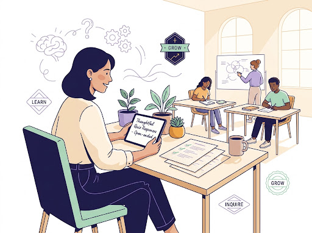
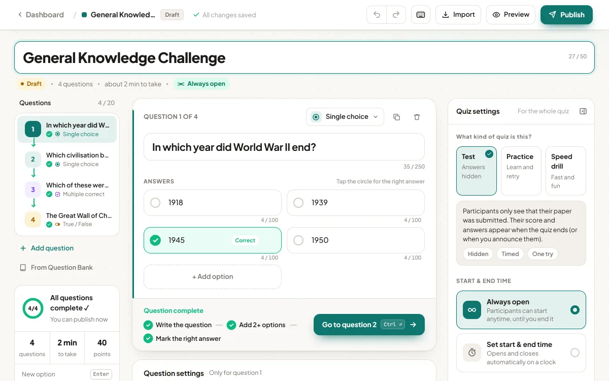
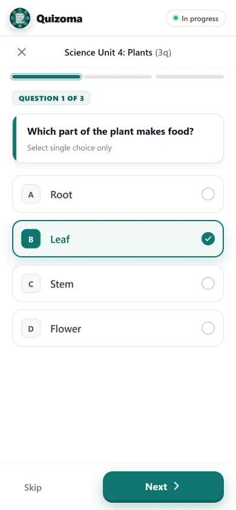
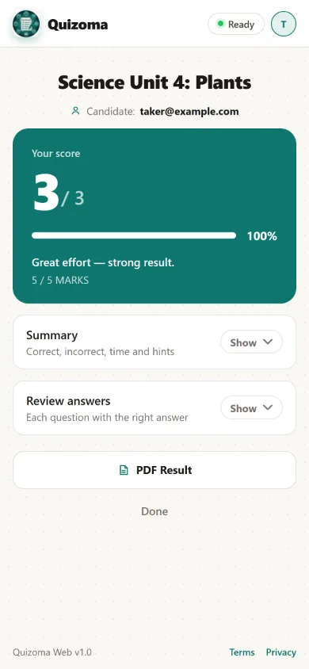
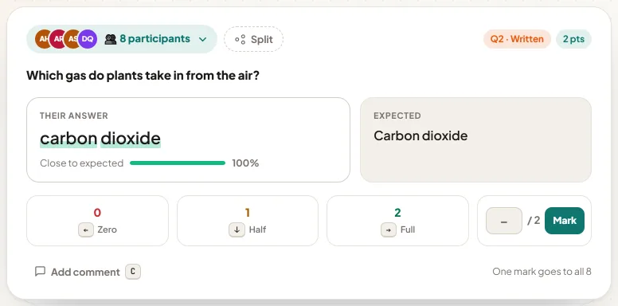
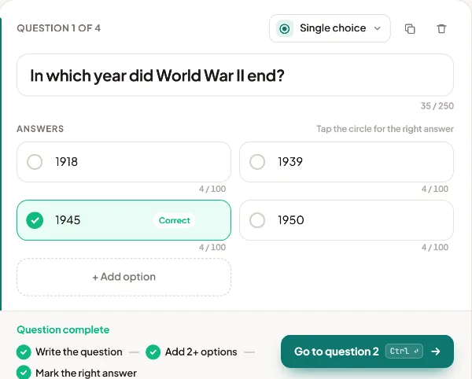
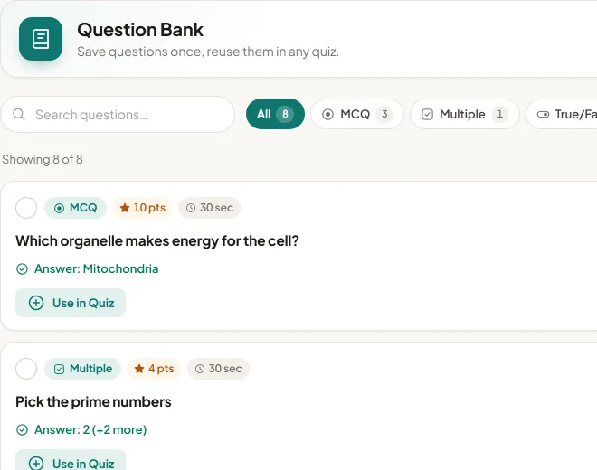
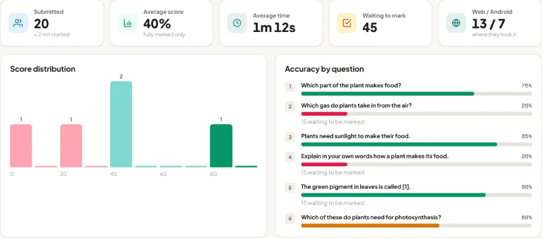
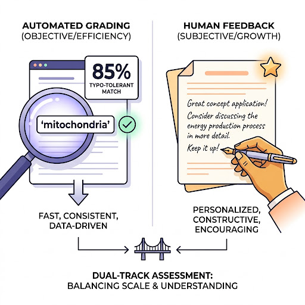

Free Classroom Quiz Maker.
Smart Grading, Zero Ads.
Build in your browser or on Android, share a code or QR, and let typo-tolerant grading do the marking. No ads, no paywalls.
MCQ, Written, Polls & Blanks
VersatileAuto Grading or Manual Marking
Typo-Tolerant100% Free • No Ads • Auto Sync
Android & Web
Now on the web.
Everything you do in the app — build, share, grade, announce — in any browser, on the same quizzes.
Six question types, templates and shortcuts — a whole quiz in minutes.



Eight identical answers. One keystroke.
Same answers are grouped and typos forgiven — then one key marks them all.

A full quiz in minutes.
Six question types, templates and keyboard shortcuts.

Import once, use forever.
Paste or upload .txt / .csv, keep a Question Bank.

See who needs help, at a glance.
Score spread, accuracy per question, PDF / Excel / CSV reports — and you choose when results go out.

- 💻Make it in Studio
- 📱Take it on a phone or the app
- ✅Mark it anywhere
Built for real classrooms, not test-taking anxiety.
100% Free & Ad-Free
No ads, no selling your data, no subscription to unlock features. Just a quiz tool that works.
Works Without Wi-Fi
Answers save right on the device, so when the Wi-Fi drops, nothing does. Everything syncs back the second it's online again.
Two Ways to Grade
Quick questions grade themselves in an instant. Anything open-ended waits patiently for you — no shortcuts, no guesswork.
Easy to Join
One tap to sign in with Google — no password to create, no long form to fill in before class starts.

Auto-Grading or Marking It Yourself
Most quiz apps mark an answer wrong for one typo or a word swapped for its synonym. Quizoma grades written answers properly instead — and if you would rather judge every answer yourself, a quiz can be switched to manual marking. There is a worked breakdown of typo-tolerant grading.
A close spelling still counts. Numbers match in any form ("7" = "seven" = "7.0"). Said it in different words? Still recognized.
Switch a quiz to manual marking and nothing in it is graded automatically — every answer waits for you to read and score, with a note if you want. You can also open any auto-graded answer afterwards and change the mark.
From Question
to Result
Here's what happens from the moment you send a question to the moment a participant sees their result.
You Create the Quiz
Write your questions in the app, or import them from a file — either way, it's ready to share in seconds.
- 6-Character Join Code or QRParticipants join instantly on any phone or laptop.
- Import from a Text or CSV FileAlready have your questions written down? Bring them in with one tap.
- 6 Question TypesMultiple choice, written answers, fill-in-the-blank, polls, and more.
Quizoma Grades It
Every answer is checked the moment it comes in — or held for you to mark, if that is how you set the quiz up.
Participant Sees Their Result
A calm, clear result screen — no pressure, no surprises, just what they got right and why.
- No App Needed to JoinOpens in any browser. One tap to sign in with Google — nothing to install.
- Small Typos Are OkayA spelling slip or a synonym still counts, with partial credit where it fits.
- Private, Kind FeedbackYour notes, right there with the score, plus a PDF summary to keep.
Every Format Your Classroom Needs
From quick multiple-choice checks to long written answers — build the exact quiz your lesson needs.
Single Choice (MCQ)
Pick the one correct answer, with points and an optional time limit per question.
Multiple Correct
Select every correct option. Participants get credit for what they got right, and guessing every box isn't rewarded.
True / False
A simple true-or-false question, with an optional box for participants to explain their answer.
Written Short Answer
Participants answer in their own words. Quizoma can grade it automatically with typo-tolerant matching, or you can switch the quiz to manual marking and grade every answer yourself.
Fill in the Blanks
Participants type the missing word into a sentence. Each blank carries its own list of accepted answers, and capitals and punctuation are ignored.
Polls
A quick, ungraded poll to check how the class feels. Results appear as a simple bar chart as answers come in.
Frequently Asked Questions
Small typos and close spellings are accepted, and numbers match in any form, so a spelling slip does not cost marks. If you would rather read every written answer yourself, switch the quiz to manual marking and nothing is graded automatically.
Answers are saved on the device as participants work, so a dropped connection never loses their progress. Everything syncs back up automatically once they're online again.
There's nothing to pay. Participants join with a 6-character join code or QR code, then sign in with their Google account — no password to create, no separate signup form.
Yes. Scores, answers, and a full PDF report are generated automatically for every quiz, ready to save or share.
Yes. Quizoma Studio lets you build, share and grade quizzes in any browser — free, signed in with Google. Quizzes you make there also appear in the Android app, and the other way round.
The Quizoma app launches free on Google Play on 1 November 2026. Until then you can build quizzes in Quizoma Studio and participants can take them in the browser.